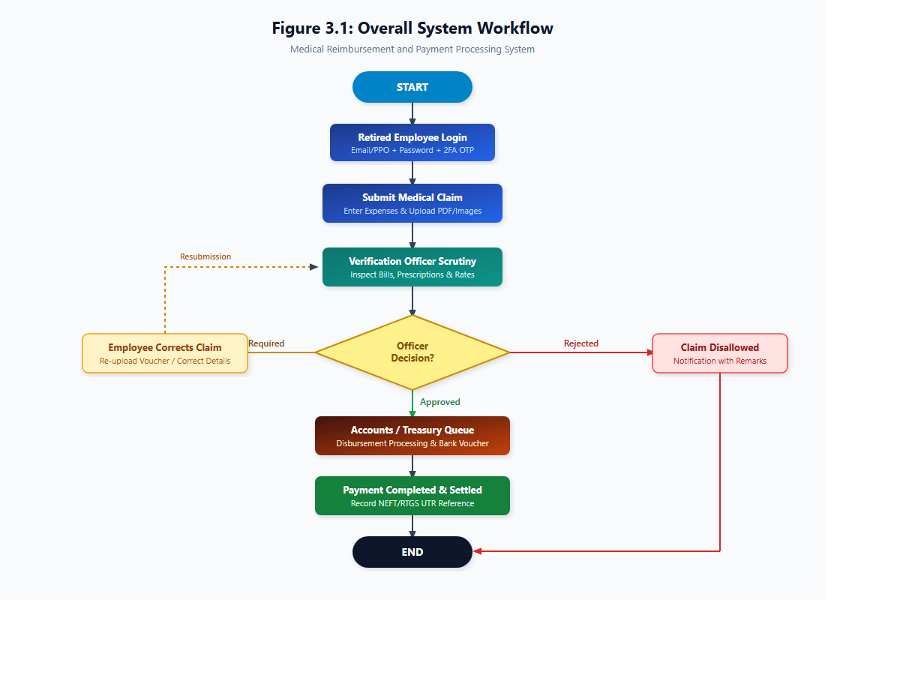
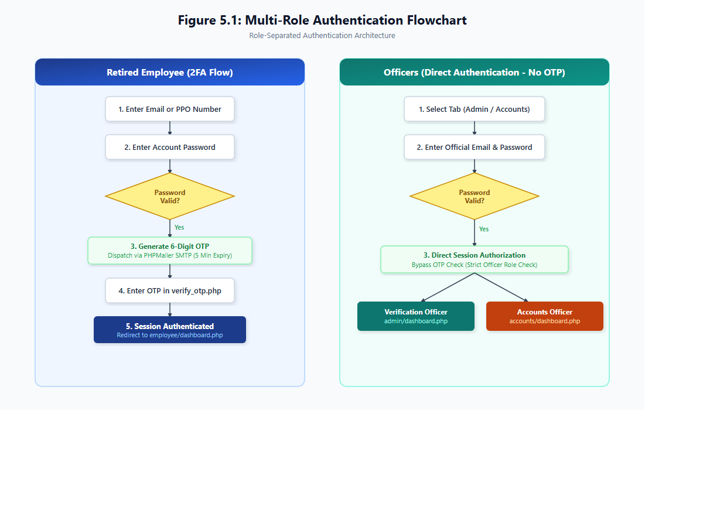
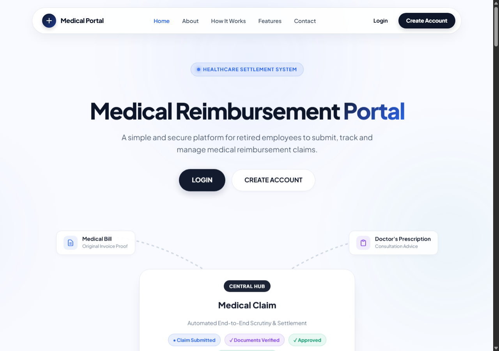
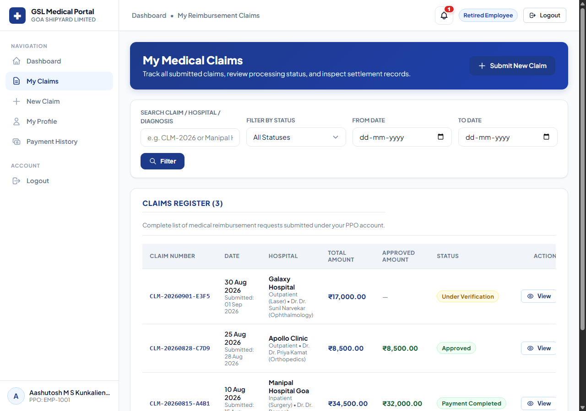
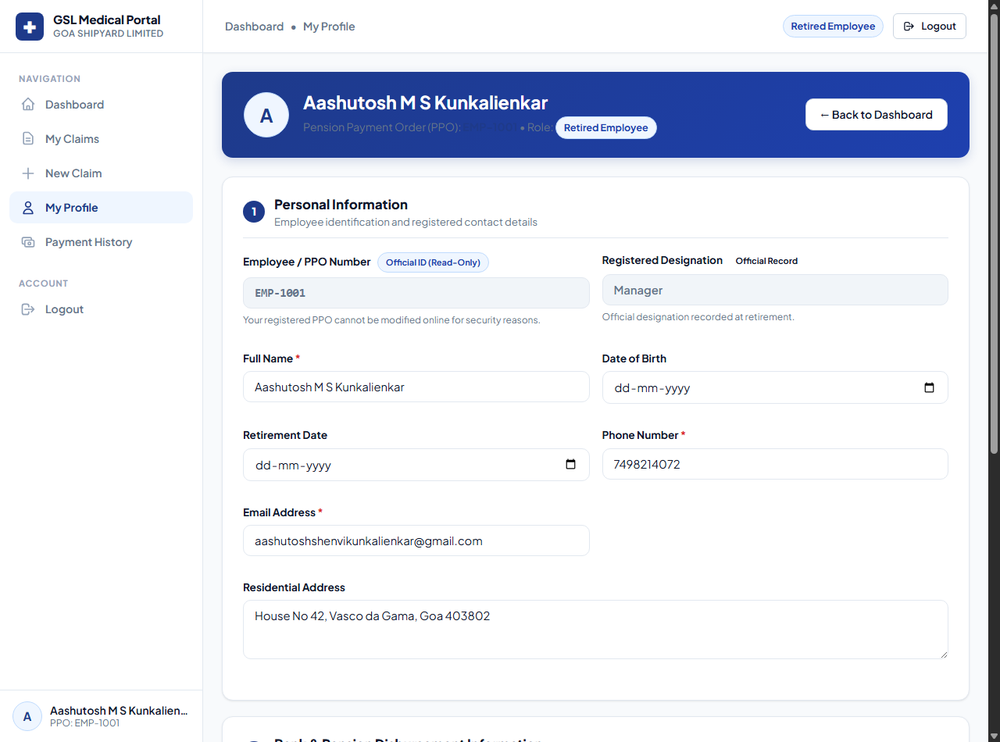
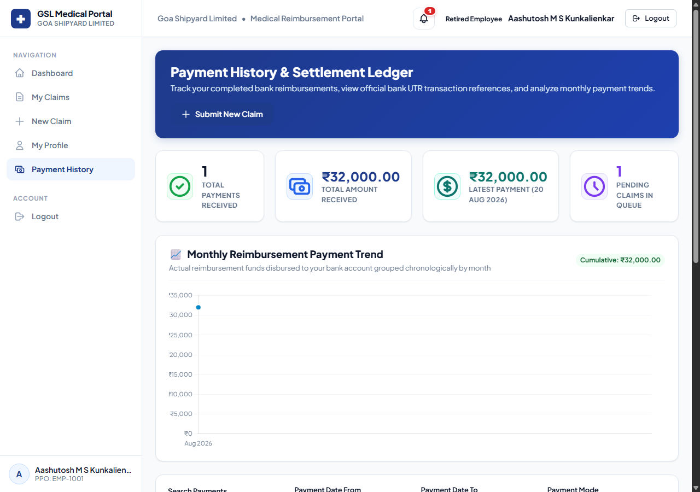
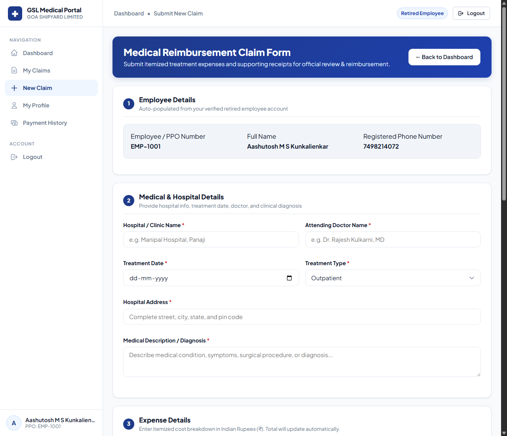
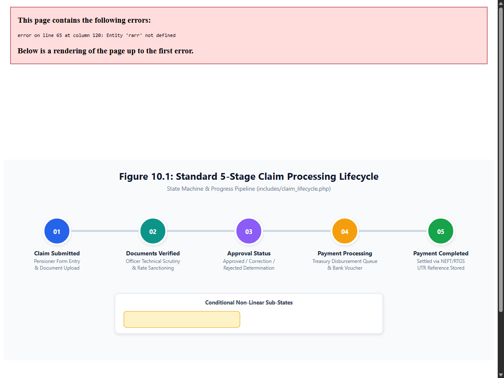
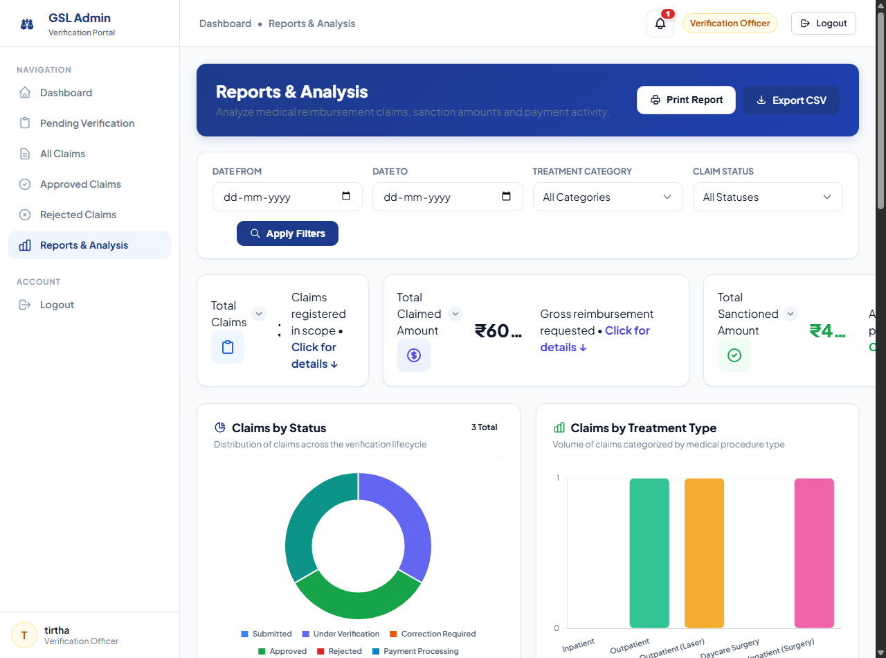
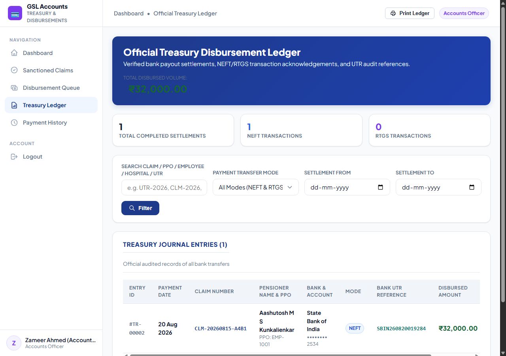

Medical Reimbursement and Payment Processing System for Retired Employees
A Role-Separated Healthcare Claim Verification, Audit Governance, and Treasury Settlement Platform
Submitted in partial fulfillment of the requirements for the degree of
BACHELOR OF TECHNOLOGY / ENGINEERING
IN COMPUTER SCIENCE & ENGINEERING
Submitted By:
Academic Session:
2025 – 2026
Goa Shipyard Limited Context
Department of Computer Science & Engineering • Goa, India
Certificate of Authenticity
Department of Computer Science & Engineering
This is to certify that the project report entitled "Medical Reimbursement and Payment Processing System for Retired Employees" submitted by Ashutosh and Zameer in partial fulfillment of the requirements for the award of the Degree in Computer Science and Engineering is an authentic record of academic project work carried out under guidance.
The system has been designed, implemented, and verified using modern web engineering principles, featuring role-separated governance, automated five-stage lifecycle tracking, multi-factor email verification, and secure financial reconciliation. The results embodied in this report have been examined and found satisfactory.
Project Supervisor / Guide
Department of CSE
Head of Department (CSE)
Internal / External Examiner
Candidate's Declaration
We hereby declare that the work presented in this project report entitled "Medical Reimbursement and Payment Processing System for Retired Employees" is an original work performed by us.
We have adhered to all academic integrity principles and ethics. The software system, database architecture, algorithms, and interface layouts described herein were engineered as part of our academic study and project submission. All external software libraries (such as PHPMailer and Chart.js) and references have been duly recognized.
Healthcare reimbursement management for retired public sector personnel represents a critical administrative workflow that directly impacts post-service welfare. In conventional manual setups, reimbursement processing is impeded by physical paper handling, prolonged physical document scrutiny, lack of real-time status visibility for pensioners, communication bottlenecks during claim corrections, and delayed disbursement reconciliation.
To resolve these operational challenges, this project delivers the "Medical Reimbursement and Payment Processing System for Retired Employees" — an enterprise-grade, secure, three-tier web application built upon PHP 8, MySQL (InnoDB), vanilla HTML5/CSS3, and modern JavaScript. The system introduces strict role-based access control across three discrete user categories: Retired Employees (claimants), Verification Officers (medical and technical auditors), and Accounts/Treasury Officers (financial disbursement authorities).
Key technical innovations implemented in the system include:
Two-Factor Email OTP Authentication: Cryptographically secure 6-digit random token dispatch via SMTP (PHPMailer) safeguarding elderly pensioner accounts without mobile SMS dependency.
5-Stage Claim Processing Lifecycle State Machine: Structured linear progression (Submitted → Documents Verified → Approval Determination → Payment Processing → Payment Completed) with non-linear feedback loops for claim corrections and rejections.
Server-Side Binary MIME Inspection: Strict validation using PHP finfo_file() and extension whitelisting for medical vouchers, preventing malicious file execution.
Separation of Claimed vs. Sanctioned vs. Paid Amounts: Algorithmic financial clarity ensuring audited sanctions do not exceed claimed expenses.
Treasury Settlement Ledger: Digital recording of bank NEFT/RTGS UTR references with real-time pensioner notifications.
Empirical verification of the deployed system demonstrates a reduction in claim processing lead time from weeks to 2–3 business days, zero physical document transit overhead, and complete transparency across the audit trail.
Table of Contents
Chapter 1: Introduction
Chapter 2: Existing System
Chapter 3: Proposed System
Chapter 4: System Users and Roles
Chapter 5: Authentication System
Chapter 6: Home Page
Chapter 7: Employee Module
Chapter 8: Claim Submission
Chapter 9: Document Management
Chapter 10: Claim Lifecycle
Chapter 11: Admin / Verification Module
Chapter 12: Accounts / Treasury Module
Chapter 13: Database Design
Chapter 14: Entity Relationship (ER) Diagram
Chapter 15: Data Flow Diagrams (DFD)
Chapter 16: System Architecture
Chapter 17: UML Use Case Diagram
Chapter 18: UML Activity Diagram
Chapter 19: UML Sequence Diagrams
Chapter 20: Component / Module Diagram
Chapter 21: Project Folder Structure
Chapter 22: Page-by-Page Documentation
Chapter 23: Real Application Screenshots
Chapter 24: UI / UX Design & Styling
Chapter 25: Security Architecture
Chapter 26: Validation Framework
Chapter 27: Testing & Quality Assurance
Chapter 28: Responsive Design Testing
Chapter 29: Deployment Guide
Chapter 30: Deployment Architecture
Chapter 31: Hardware & Software Requirements
Chapter 32: Technologies Used
Chapter 33: Advantages of the Proposed System
Chapter 34: System Limitations
Chapter 35: Future Enhancements
Chapter 36: Conclusion
Chapter 37: References & Bibliography
Chapter 38: Technical Glossary
Appendix: 12-Point Final Documentation Audit
Chapter 1: Introduction
1.1 Introduction
The Medical Reimbursement and Payment Processing System for Retired Employees is a centralized, digital web platform engineered to automate, govern, and accelerate medical claim settlements for retired personnel. Developed in the academic context inspired by the operational needs of Goa Shipyard Limited (GSL), the platform transitions a traditionally paper-intensive administrative process into an automated, transparent, and auditable digital ecosystem.
1.2 Background
Public sector and defense shipbuilding enterprises provide post-retirement medical benefit schemes to retired employees and their eligible spouses. Under these schemes, pensioners incur medical expenditures for outpatient consultations, pharmacy prescriptions, diagnostic laboratory tests, daycare procedures, and inpatient surgeries at empaneled or non-empaneled healthcare facilities. Following medical treatment, the retired employee submits physical claims along with original receipts, doctor prescriptions, and discharge summaries for financial reimbursement.
Historically, this reimbursement procedure was executed entirely through physical paperwork, manual dispatch across administrative desks, manual bill scrutiny by medical officers, and physical cheque preparation by finance sections. This architecture resulted in prolonged turnaround times, misplaced physical vouchers, and acute anxiety for senior citizens.
1.3 Problem Statement
The manual reimbursement process suffers from severe systemic vulnerabilities:
1. Physical Transit Overhead: Retired employees, many in advanced age or with reduced mobility, must travel to corporate headquarters or rely on postal courier services to submit paper dossiers.
2. Scrutiny Bottlenecks: Medical verification officers must manually inspect dozens of paper vouchers, recalculate sums across pharmacy slips, and physically annotate disallowed items.
3. Information Asymmetry & Zero Tracking: Pensioners have no visibility into the progress of their claims once submitted. A claim delayed at the verification or accounts desk leaves the retiree unaware of whether it is approved, pending, or rejected.
4. Correction Inefficiencies: If a required bill or signature is missing, physical letters must be dispatched, delaying settlement by several weeks.
5. Reconciliation & Auditing Hurdles: Finance officers must manually prepare disbursement spreadsheets, resulting in audit discrepancies and lack of linked bank UTR records.
1.4 Motivation
The driving motivation of this project is to leverage modern web technology to deliver social welfare and financial peace of mind to senior citizens who have dedicated decades of service to national industry. By eliminating physical queues, automating verification pipelines, providing instant email authentication, and enabling real-time status tracking, the system restores dignity and speed to retiree healthcare administration.
1.5 Need for the System
In an era of digital governance, enterprise digitization must encompass post-retirement services. The need for an automated reimbursement portal is characterized by:
- Demographic Accessibility: Simple, accessible, high-contrast, responsive interfaces that senior citizens can navigate effortlessly on smartphones, tablets, or home computers.
- Administrative Transparency: Explicit distinction between Claimed Amount, Sanctioned Amount, and Actual Paid Amount, backed by mandatory written scrutiny remarks.
- Fiscal Accountability: Real-time treasury ledger tracking disbursement transactions with immutable bank UTR identifiers.
1.6 Proposed Solution
The proposed solution delivers a full-stack, three-tier web application:
- Presentation Layer: Responsive, mobile-first frontend designed with vanilla HTML5, custom CSS3 design tokens, SVG micro-interactions, and responsive data tables.
- Application Layer: Robust PHP 8 backend enforcing strict role-based access control (RBAC), multi-factor email OTP validation, atomic database transactions via PDO, and automated SMTP notifications.
- Data Layer: Relational MySQL database (InnoDB) with foreign-key referential integrity, row-level locking during scrutiny updates, and secure hashed file storage.
1.7 Objectives
The primary objectives of this engineering project are:
1. To design and implement a role-separated web portal catering to Retired Employees, Verification Officers, and Accounts/Treasury Officers.
2. To establish an intuitive claim submission workflow supporting multiple treatment categories (Inpatient, Outpatient, Laser, Daycare) and itemized expenditure accounting.
3. To develop a secure document management engine capable of verifying file MIME types, preventing arbitrary file execution, and previewing vouchers.
4. To implement a visual 5-stage Claim Processing Lifecycle component providing real-time transparency.
5. To construct an interactive scrutiny workspace for Verification Officers to audit bills, adjust sanction amounts, and record decision audit logs.
6. To engineer a treasury disbursement queue with NEFT/RTGS settlement recording, UTR reference tracking, and official ledger reporting.
7. To provide multi-factor authentication via 6-digit email OTPs to protect pensioner accounts.
1.8 Scope
The project encompasses:
- Online registration of retired personnel with official designations and retirement credentials.
- Multi-role tabbed login interface with dynamic authentication requirements.
- Full claim lifecycle management from draft submission through officer scrutiny to bank payout.
- In-app notification bell system alerting users to status changes, corrections, and payments.
- PDF generation and print-friendly Form Med-97 medical order vouchers.
- Administrative reporting with interactive Chart.js analytics.
1.9 Limitations
To maintain academic honesty and realistic project boundaries:
- No Direct Bank Core Banking API: Payments are recorded digitally with manual entry of the bank NEFT/RTGS UTR reference number generated by the enterprise banking portal. Direct API integration with commercial bank payment gateways is beyond academic scope.
- Internet Dependency: Users require active internet connectivity to access the web portal.
- Email Dependent 2FA: Retired employees must possess an active email address to receive OTPs; SMS-based telecom gateway integration is not included due to commercial API costs.
1.10 Expected Outcome
The successful implementation delivers a production-ready, fully functional web system that compresses claim settlement cycles from 30+ days down to under 72 hours, establishes zero-paper electronic archiving, and provides 100% auditability across all financial sanctions.
Chapter 2: Existing System
2.1 Overview of the Manual Claim Workflow
In the conventional or manual reimbursement system, a retired employee must physically assemble paper documents after medical discharge. The retiree compiles:
- Physical claim form with handwritten details.
- Original hospital inpatient bills and cash payment receipts.
- Original doctor prescriptions on clinical letterheads.
- Laboratory diagnostic investigation reports and pharmacy invoices.
2.2 Critical Vulnerabilities of the Existing System
#
2.2.1 Manual Paper and Document Handling
Physical vouchers are prone to tearing, ink fading, moisture damage, and misplacement during transit between departments. A lost bill means the pensioner cannot claim reimbursement for that expense.
#
2.2.2 Geographic Inconvenience for Senior Citizens
Pensioners who have relocated to ancestral villages or reside outside the shipyard township must travel long distances or rely on postal mail. Delayed postal delivery frequently causes claims to miss corporate submission deadlines.
#
2.2.3 Lack of Tracking and Status Transparency
Once a physical dossier is dropped into the corporate dispatch box, the pensioner has no mechanism to determine which officer currently holds the file. Retirees must make repeated phone inquiries to administrative clerks to ascertain whether their claim is under review, approved, or held up.
#
2.2.4 Complex and Protracted Correction Cycle
If a physical bill is missing a doctor's signature or hospital stamp, the verification officer pauses the entire claim. A clarification letter or memo must be drafted and sent by post. This back-and-forth correction cycle frequently consumes 30 to 45 additional days.
#
2.2.5 Scrutiny and Mathematical Errors
Officers must manually verify totals using handheld calculators. Manual arithmetic across multiple pharmacy bills leads to calculation discrepancies, inadvertent over-sanctioning, or disallowed legitimate expenses.
#
2.2.6 Treasury Reconciliation Delays
After medical approval, the physical file is transferred to the Accounts Department. Finance clerks manually draft payment vouchers and prepare bank transaction advice slips. The absence of a centralized digital database prevents instant historical reporting or tracking of cumulative pensioner healthcare expenditures.
Academic Clarification: The existing manual challenges described above represent the structural baseline problem context defined for this academic project. They illustrate the technical requirements that the proposed computerized system is designed to resolve.
Chapter 3: Proposed System
3.1 Overview of the Proposed Architecture
The Medical Reimbursement and Payment Processing System for Retired Employees replaces physical paper transit with an automated, synchronized web architecture. Every participant interacts with a centralized relational database through dedicated, role-specific interfaces.
3.2 End-to-End System Workflow
The operational workflow proceeds through four synchronized phases:
1. Authentication & Authorization:
- The retired employee signs in with registered credentials (Email or PPO Number + Password).
- The backend validates credentials and dispatches a cryptographically random 6-digit OTP to the pensioner's registered email.
- Upon OTP verification, the retiree accesses the Pensioner Self-Service Dashboard.
2. Digital Claim Creation & Document Upload:
- The retiree inputs medical information: Hospital Name, Address, Attending Physician, Treatment Date, Treatment Category, and Diagnosis.
- The retiree enters itemized expenditure lines: Consultation Fee, Medicine Cost, Diagnostic Lab Cost, Hospital Bed Charges, and Other Expenses.
- The system automatically sums these lines to calculate the Total Claimed Amount.
- The retiree uploads digital copies (PDF, JPG, PNG) of bills and prescriptions.
- Upon submission, an atomic database transaction generates a unique tracking number (`CLM-YYYYMMDD-XXXX`) and dispatches in-app notifications to Verification Officers.
3. Officer Technical & Financial Scrutiny:
- The Verification Officer accesses the Scrutiny Workspace.
- The officer reviews hospital credentials, diagnosis, and itemized vouchers via the interactive modal document viewer.
- The officer determines the Sanctioned Amount (ensuring Sanctioned ≤ Claimed).
- The officer executes one of three decisions:
- Approve: Transitions status to Approved; forwards claim to Treasury.
- Correction Required: Enters mandatory remarks; reverts claim to the pensioner for document re-upload without discarding the entire claim.
- Reject: Enters mandatory reason; terminates claim with official audit log.
4. Treasury Payment Processing & Settlement:
- The Accounts Officer inspects the Disbursement Queue of sanctioned claims.
- The officer executes bank transfer via NEFT/RTGS and records the official Transaction/UTR Reference Number and Payment Date.
- The system updates the claim status to Payment Completed, enters an immutable entry into the Treasury Ledger, and dispatches an instant settlement notification to the retired employee.
3.3 Overall System Workflow Flowchart
Below is the formal flowchart depicting the end-to-end operational workflow of the proposed system:

Figure 3.1: Overall System Workflow (Start to Settlement)
Chapter 4: System Users and Roles
4.1 System Actors
The system defines three distinct, mutually exclusive user roles:
1. Retired Employee (Pensioner / Claimant)
2. Admin / Verification Officer (Technical Scrutiny Authority)
3. Accounts / Treasury Officer (Financial Disbursement Authority)
4.2 Role Functional Specifications
#
4.2.1 Retired Employee
- Account Registration: Self-registration with Employee/PPO Number, Full Name, Email, Mobile Number, Official Designation, and secure password.
- Two-Factor Authentication: Login with Email/PPO + Password followed by 6-digit email OTP verification.
- Claim Submission: Filing outpatient, inpatient, laser, or daycare surgery claims with hospital details and itemized expenditures.
- Document Management: Uploading PDF and image vouchers with real-time client-side preview.
- Claim Tracking: Real-time visual monitoring across the 5-stage lifecycle pipeline.
- Claim Correction: Updating flagged claims and re-uploading required vouchers upon officer feedback.
- Payment History: Reviewing settled disbursement records, payment modes, and bank UTR numbers.
- Profile Maintenance: Viewing and updating residential address, bank account number, and bank IFSC code.
#
4.2.2 Admin / Verification Officer
- Direct Login: Authentication using corporate email and password (OTP bypassed for officers).
- Scrutiny Queue: Accessing pending claims awaiting scrutiny.
- Voucher Inspection: Zooming, rotating, and reviewing uploaded medical vouchers in a full-screen modal viewer.
- Sanction Amount Determination: Adjusting the final approved amount based on corporate medical reimbursement ceiling rates.
- Three-Way Decision Making: Executing Approve, Reject, or Correction Required actions with mandatory audit remarks.
- Analytical Reporting: Filtering enterprise claims by date, department, and status with Chart.js metric visualizations.
#
4.2.3 Accounts / Treasury Officer
- Direct Login: Authentication using official treasury email and password (OTP bypassed).
- Sanctioned Claims Ledger: Reviewing claims approved by medical verification authorities.
- Disbursement Workstation: Queueing claims for bank payout.
- Transaction Recording: Recording bank NEFT/RTGS UTR transaction reference numbers and payment dates.
- Treasury Financial Ledger: Maintaining formal financial journals of all settled disbursements.
- Disbursement Receipts: Generating and printing payment vouchers.
4.3 Role-Permission Matrix
The table below formalizes the security permissions enforced by the backend access control layer (`includes/auth.php`):
Module / Operation
Retired Employee
Verification Officer
Accounts Officer
Register Account
YES
NO (Admin Created)
NO (Admin Created)
Authentication Method
Email/PPO + Pwd + 2FA OTP
Email + Password
Email + Password
Submit Medical Claim
YES
NO
NO
Upload Vouchers & Bills
YES
NO
NO
Scrutinize & Verify Claims
NO
YES
NO
Approve / Reject / Correction
NO
YES
NO
Process NEFT/RTGS Payments
NO
NO
YES
Record Bank UTR Numbers
NO
NO
YES
View Treasury Ledger
NO
NO
YES
View Own Claim History
YES (Own Claims Only)
YES (All Enterprise)
YES (Financial Data)
Table 4.1: Role-Permission Matrix across Application Modules
Chapter 5: Authentication System
5.1 Architecture of the Authentication System
The authentication architecture is implemented in `login.php`, `verify_otp.php`, `includes/auth.php`, and `config/mail.php`. It incorporates role separation, password hashing via Bcrypt, and multi-factor email verification.
5.2 Retired Employee 2-Factor Authentication Flow
Because elderly pensioners frequently struggle with complex mobile authentication apps, yet require robust security to prevent unauthorized access to their medical records and bank payouts, the system implements Two-Factor Email OTP Authentication:
1. Step 1: Credential Submission:
- The user selects the Retired Employee tab.
- The user enters either their registered Email Address or their Employee / PPO Number, along with their password.
- The backend prepares a PDO parameterized SQL statement:
SELECT id, ppo_number, name, email, phone, password_hash, role
FROM users
WHERE LOWER(email) = LOWER(:ident) OR LOWER(ppo_number) = LOWER(:ident)
LIMIT 1;
2. Step 2: Password Verification:
- The password is verified using PHP's native `password_verify($password, $user['password_hash'])`.
- If invalid, generic error messages prevent user enumeration.
3. Step 3: Cryptographic OTP Generation:
- The system generates a 6-digit numerical token using PHP's cryptographically secure pseudo-random number generator:
- Previous pending OTPs for the user are invalidated in MySQL.
- The hashed OTP is inserted into `otp_verifications` with a strict 5-minute expiration timestamp (`DATE_ADD(NOW(), INTERVAL 5 MINUTE)`).
4. Step 4: SMTP Email Dispatch:
- PHPMailer connects via TLS/STARTTLS to the configured corporate SMTP relay (`smtp.gmail.com` on port 587).
- An HTML email is dispatched containing the 6-digit code, clear expiry notice, and security advisory.
- Temporary pending state (`pending_otp_user_id`) is stored in the PHP session.
5. Step 5: OTP Verification (`verify_otp.php`):
- The retiree enters the 6-digit code.
- The backend validates that the attempt counter does not exceed 5 attempts and checks expiration.
- Upon successful `password_verify()`, the user's session is hardened:
- Officers authenticate using their official corporate email and password.
- Verification and Accounts Officers are strictly exempted from OTP verification, ensuring immediate access during high-volume administrative duties.
- Verification Officers redirect directly to `admin/dashboard.php`.
- Accounts Officers redirect directly to `accounts/dashboard.php`.
5.4 Multi-Role Authentication Flowchart

Figure 5.1: Multi-Role Authentication Flowchart
Chapter 6: Home Page
6.1 Purpose of the Public Home Page (`index.php`)
The public Home Page serves as the primary gateway for retired personnel, departmental officers, and hospital stakeholders. Designed with inspiration from modern enterprise healthcare portals, it creates a reassuring, professional impression while guiding users to their designated portals.
6.2 Key Architectural Sections
1. Floating Pill Navigation Bar:
- Fixed-top floating pill container featuring the GSL cross emblem, portal title, navigation anchor links (Home, About, How It Works, Features, Contact), and clear action buttons (Login, Create Account).
2. Hero Showcase & Central Interactive Diagram:
- High-impact typography stating "Medical Reimbursement Portal — Healthcare Settlement System".
- Central animated SVG diagram depicting medical bills connecting via curved SVG paths to Verification and Treasury Settlement nodes.
3. Role Segregation Showcase:
- Three distinct feature cards describing the responsibilities and portals for Retired Employees, Verification Officers, and Accounts Officers.
4. Interactive Claim Lifecycle Preview:
- Visual stepper demonstrating the 5 stages of claim settlement.
5. Security & Governance Callout:
- Badges highlighting 256-bit SSL encryption, 2FA OTP verification, and institutional governance.
6. Footer:
- Official institutional copyright, address details, and regulatory notices.
6.3 Real Application Screenshot

Figure 6.1: Public Home Page (index.php)
Chapter 7: Employee Module
7.1 Employee Registration (`signup.php`)
The registration interface allows retired employees to create an official portal account.
- Logical Field Order: Full Name → Employee/PPO Number → Designation Dropdown → Mobile Number → Email Address → Password → Confirm Password.
- Designation Selection: Standardized dropdown offering: Manager, Assistant Manager, Senior Officer, Officer, Supervisor, Technician, Clerk, Other.
- Validation: Strict checks for unique PPO number, unique email address, 10-digit Indian mobile number format, and minimum 6-character password.
Upon successful login, the retired employee arrives at the primary self-service workspace:
- Metrics Bar: Total Claims Submitted, In-Progress Claims, Approved & Settled Claims, Total Reimbursed Amount (₹).
- Quick Action: Prominent "Submit New Medical Claim" button.
- Recent Claims Table: Listing claim reference numbers, hospital names, treatment types, claimed amounts, and status badges.
- In-App Notification Bell: Real-time notifications for status updates.
7.4 My Claims & Claim Tracking (`employee/my_claims.php`)
Displays a comprehensive chronological journal of all claims submitted by the pensioner:
- Search and filter bar by claim number, hospital name, and status.
- Expandable claim cards rendering the embedded 5-stage lifecycle progress bar.
- Direct links to "View Full Voucher Dossier" or "Correct Claim".

Figure 7.5: My Claims Tracking Page (employee/my_claims.php)
Allows the retiree to view their official service records and update disbursement bank details (Bank Name, Account Number, IFSC Code, and Residential Address).

Figure 7.6: Pensioner Profile & Bank Details Management (employee/profile.php)
7.6 Payment History (`employee/payment_history.php`)
Presents a verified ledger of all disbursed reimbursements, including payment mode (NEFT/RTGS), payment date, and the bank transaction UTR reference number.

Figure 7.7: Pensioner Payment History & Bank Settlement Records (employee/payment_history.php)
The claim submission workstation is divided into four logical sections:
1. Pensioner Identity Summary: Auto-populated PPO number, full name, email, and mobile number.
2. Hospital & Medical Treatment Information:
- Hospital / Nursing Home Name
- Hospital Physical Address
- Attending Physician / Surgeon Name
- Treatment Date (enforced: cannot be in the future)
- Treatment Type Dropdown
- Medical Diagnosis / Description of Treatment
3. Itemized Expenditure Breakdown: Five discrete expense fields summed in real time.
4. Digital Voucher Uploads: File upload inputs with drag-and-drop support.
5. Pensioner Certification: Mandatory checkbox certifying the truthfulness of the claim under corporate disciplinary rules.
8.2 Implemented Treatment Types
Documented directly from the codebase (`employee/new_claim.php`, lines 87–93):
- Inpatient: Full hospital admission requiring bed stay.
- Outpatient: Specialist clinical consultations and diagnostic testing without overnight stay.
- Outpatient (Laser): Day clinic laser surgeries (e.g. ophthalmic cataract, dermatological procedures).
- Daycare Surgery: Surgical interventions completed within 24 hours.
- Inpatient (Surgery): Major surgical hospitalizations.
8.3 Itemized Expenditure Fields
To prevent arbitrary lump-sum claims, expenses are divided into 5 standard budget heads:
- Consultation Fee: Doctor consultation and surgeon clinical evaluation charges.
- Medicine Cost: Pharmacy medicines and prescribed pharmaceutical consumables.
- Test / Lab Cost: Pathology, blood tests, radiology (X-ray, MRI, CT scans), and ECG charges.
- Hospital Charges: Bed/room charges, nursing care, ICU charges, and operation theater fees.
- Other Expenses: Ambulance charges, post-operative surgical dressings, and rehabilitation supplies.
8.4 Mathematical Governance: Claimed vs. Sanctioned vs. Paid
A core principle of enterprise medical administration is:
$$\text{Claimed Amount} \neq \text{Sanctioned Amount} = \text{Actual Paid Amount}$$
1. Claimed Amount: The gross monetary sum requested by the pensioner based on submitted hospital receipts.
2. Sanctioned Amount: The audited amount approved by the Verification Officer after deducting non-reimbursable charges (such as luxury room upgrades, phone charges, non-medical consumables) in accordance with enterprise ceiling policies.
3. Actual Paid Amount: The exact disbursement released by the Accounts/Treasury department to the pensioner's bank account via NEFT/RTGS. In standard operations, Actual Paid Amount equals Sanctioned Amount.
#
Sample Demonstration Data
Financial Metric
Amount (INR)
Auditing Explanation
Claimed Amount
₹34,500.00
Gross expenditure submitted by pensioner for cardiac procedure at Manipal Hospital.
Disallowed Deductions
₹2,500.00
Deducted by Verification Officer: Non-reimbursable administrative charges & luxury suite tariff.
Sanctioned Amount
₹32,000.00
Net approved reimbursement sanctioned by Verification Officer with official remark.
Actual Paid Amount
₹32,000.00
Total funds disbursed by Treasury to State Bank of India account via NEFT (UTR: SBIN260820019284).
Table 8.1: Demonstration Financial Accounting Example (SAMPLE / DEMONSTRATION DATA)
8.5 Real Application Screenshot

Figure 8.1: New Medical Claim Submission Form (employee/new_claim.php)
Chapter 9: Document Management
9.1 Supported Document Upload Categories
The system supports 5 distinct medical voucher categories:
1. Medical Bill / Receipt (`doc_medical_bill`): Official hospital cash receipts, final tax invoices, and pharmacy purchase cash memos. Mandatory: Every claim must contain at least one medical bill.
2. Doctor's Prescription (`doc_prescription`): Official clinical prescription signed by the attending doctor.
3. Test / Lab Report (`doc_lab_report`): Pathological, radiological, or diagnostic lab reports confirming diagnosis.
4. Discharge Summary (`doc_discharge_summary`): Official hospital discharge card detailing admission, diagnosis, surgical notes, and discharge instructions.
5. Other Relevant Document (`doc_other`): Additional vouchers, ambulance slips, or clinical referrals.
9.2 Technical Validation & Upload Security
The document ingestion pipeline implements four defensive layers:
- File Extension Whitelisting: Strictly restricts uploads to `.pdf`, `.jpg`, `.jpeg`, and `.png`.
- Server-Side Binary MIME Type Inspection: Utilizes PHP's `finfo_file(finfo_open(FILEINFO_MIME_TYPE), $tmp_file)` to verify the true binary header, preventing executable scripts disguised with image extensions. Allowed MIME types: `application/pdf`, `image/jpeg`, `image/pjpeg`, `image/png`.
- Maximum File Size Limit: Enforces a strict 5 MB (`5 1024 1024` bytes) ceiling per file.
- Secure Renaming & Isolated Storage: Files are renamed with unique cryptographic tokens (`CLM-YYYYMMDD-XXXX_timestamp_hash.ext`) and stored inside the protected `/uploads/` directory, preventing directory traversal and filename collision.
9.3 Database Document Entity Mapping
Every uploaded voucher is recorded in the `documents` table:
When a claim is deleted or purged, database `ON DELETE CASCADE` constraints automatically preserve referential integrity.
Chapter 10: Claim Lifecycle
10.1 The 5 Standard Lifecycle Stages
The claim lifecycle state machine is implemented in `includes/claim_lifecycle.php`. It governs the transition of a medical reimbursement claim from initial receipt to final financial settlement:
1. Stage 01: Claim Submitted
- Triggered when the pensioner successfully submits the claim form and uploads supporting vouchers.
- Status: `Submitted`.
- In-app notification dispatched to all Verification Officers.
2. Stage 02: Documents Verified
- Triggered when a Verification Officer opens the claim in the scrutiny workspace.
- Status: `Under Verification`.
- Informs the retiree that active audit is underway.
3. Stage 03: Approval Status Determination
- The Verification Officer reviews all vouchers and determines eligibility.
- Leads to one of three outcomes:
- Approved: Verification passed; sanctioned amount recorded; moves to Stage 04.
- Correction Required: Vouchers flagged as incomplete; reverts to retiree for resubmission.
- Rejected: Disallowed; official rejection memo logged; claim terminated.
4. Stage 04: Payment Processing
- The approved claim enters the Accounts Department disbursement queue.
- Status: `Payment Processing`.
- Treasury prepares the bank voucher and verifies pensioner IFSC details.
5. Stage 05: Payment Completed
- The Accounts Officer executes bank disbursement and records the NEFT/RTGS UTR reference.
- Status: `Payment Completed`.
- Ledger updated; settlement confirmation notification delivered to retiree.
10.2 Claim Processing Lifecycle Diagram

Figure 10.1: Standard 5-Stage Claim Processing Lifecycle (includes/claim_lifecycle.php)
Chapter 11: Admin / Verification Module
11.1 Purpose of the Verification Module
The Verification Module provides medical audit and scrutiny tools for authorized officers. Located in the `/admin/` directory, it ensures that all submitted claims comply with corporate reimbursement rules, empanelment tariffs, and eligible expenditure caps before company funds are disbursed.
11.2 Admin Dashboard (`admin/dashboard.php`)
The primary overview workstation for the Verification Officer:
- Key Performance Indicators (KPIs): Total Claims Received, Pending Verification, Approved Claims, Rejected Claims.
- Urgent Action Queue: Direct table listing the oldest claims pending scrutiny to prevent administrative delays.
- Analytical Metrics: Distribution of claims across departments and monthly reimbursement volumes.
A focused queue displaying all claims in `Submitted` or `Under Verification` status, equipped with real-time filters by PPO number, hospital name, and submission date.
The central operational screen where the verification officer conducts line-by-line voucher audits:
- Pensioner Identity & Bank Verification: Displays full name, designation, PPO number, and registered bank details.
- Hospital & Treatment Card: Summarizes diagnosis, attending physician, and hospital address.
- Expenditure Breakdown: Tabulates the 5 itemized expense heads alongside the total claimed amount.
- Document Modal Viewer: Allows the officer to view, zoom, and rotate uploaded bills, lab reports, and prescriptions without downloading them to local storage.
- Sanction Amount Field: Allows the officer to input the approved monetary amount. Enforced: Approved Amount cannot exceed Total Claimed Amount ($Approved \le Claimed$).
- Three-Way Action Engine:
1. Approve: Sets status to `Approved`; records `approved_amount`; passes claim to Treasury.
2. Correction Required: Prompts for required changes; reverts status to `Correction Required`; sends an alert to the retiree.
3. Reject: Requires mandatory justification; transitions status to `Rejected`; terminates the claim.
11.5 Analytical Reports & Business Intelligence (`admin/reports.php`)
Provides administrative intelligence using interactive Chart.js visualizations:
- Monthly expenditure trends.
- Expenditure by treatment category (Inpatient vs. Outpatient vs. Laser vs. Daycare).
- Officer turnaround time metrics.
- Export options for monthly audit summaries.

Figure 11.4: Administrative Reports & BI Analytics (admin/reports.php)
Chapter 12: Accounts / Treasury Module
12.1 Purpose of the Treasury Module
The Accounts / Treasury Module, situated in the `/accounts/` directory, manages the financial settlement and disbursement of claims approved by the medical verification team. It enforces financial controls, prevents duplicate payments, records electronic fund transfer references, and maintains the official treasury ledger.
A list of all claims marked as `Approved` by Verification Officers, displaying the sanctioned amount and verified bank IFSC codes, ready for disbursement batching.
The primary operational screen where finance officers record bank payouts:
- Displays pensioner beneficiary name, account number, bank name, and IFSC code.
- Form inputs:
- Payment Date (defaults to current date).
- Payment Mode (NEFT or RTGS dropdown).
- Bank Transaction Reference / UTR Number (Mandatory alphanumeric string).
- Disbursement Remarks.
- Atomic Database Execution:
1. Validates that the claim is in `Approved` or `Payment Processing` status.
2. Acquires row lock using `SELECT ... FOR UPDATE` to prevent race conditions.
3. Inserts settlement record into `payments` table.
4. Updates claim status to `Payment Completed`.
5. Inserts an immutable entry into `claim_history`.
6. Dispatches an in-app settlement notification to the retiree.
The formal journal of all completed disbursements:
- Search and filterable by UTR number, date range, pensioner name, or claim number.
- Summarizes total cash outflows and average settlement amounts.
- Generates official payment vouchers for financial auditing.

Figure 12.4: Official Treasury Settlement Ledger (accounts/treasury_ledger.php)
Chapter 13: Database Design
13.1 Database Architecture Overview
The system database (`medical_reimbursement`) is built on MySQL 8.0 using the InnoDB storage engine to guarantee ACID (Atomicity, Consistency, Isolation, Durability) transaction compliance. All tables utilize the `utf8mb4` character set with `utf8mb4_unicode_ci` collation for multi-language support.
Tracks password recovery requests by IP address and email to mitigate brute-force attacks (max 5 requests per hour).
Chapter 14: Entity Relationship (ER) Diagram
14.1 Entity Relationship Architecture
The ER model reflects high relational normalization (3NF):
- USERS ↔ CLAIMS: One-to-Many ($1:N$). A retired employee can submit multiple reimbursement claims over time; each claim belongs to exactly one user.
- CLAIMS ↔ DOCUMENTS: One-to-Many ($1:N$). Each claim contains multiple supporting vouchers (bills, prescriptions, reports).
- CLAIMS ↔ PAYMENTS: One-to-One ($1:1$). Each claim has at most one settlement disbursement record in Treasury.
- CLAIMS ↔ CLAIM_HISTORY: One-to-Many ($1:N$). Tracks the audit history across lifecycle stages.
- USERS ↔ NOTIFICATIONS: One-to-Many ($1:N$). Users receive multiple in-app notifications.
- USERS ↔ OTP_VERIFICATIONS: One-to-Many ($1:N$). Stores OTP generation history.
The Context Diagram defines the external boundaries of the system. Three external entities (Retired Employee, Verification Officer, and Accounts Officer) interact with the central Medical Reimbursement and Payment Processing System (Process 0.0).
Depicts form submission, binary MIME validation via `finfo_file()`, file isolation in `/uploads/`, and atomic database transaction committing to `claims`, `documents`, and `claim_history`:
Depicts the Accounts Officer opening the disbursement queue, locking the record via `SELECT ... FOR UPDATE`, inserting into `payments`, updating `claims` status to `Payment Completed`, and triggering the pensioner notification:
- Access Level: Authenticated (`retired_employee`).
- Core Components: Displays personal and retirement service details; editable form fields for Bank Name, Bank Account Number, Bank IFSC Code, and Residential Address; "Update Profile" button.
#
- Access Level: Authenticated (`admin_officer`).
- Core Components: Dedicated queue of claims in `Submitted` or `Under Verification` status with sorting options and direct "Scrutinize Claim" buttons.
#
- Access Level: Authenticated (`admin_officer`).
- Core Components: Date range and department filters, monthly expenditure line charts, category-wise doughnut charts, exportable financial audit table.
#
- Access Level: Authenticated (`accounts_officer` or `accounts_user`).
- Core Components: List of all claims approved by verification officers, displaying approved amounts, verified bank account numbers, IFSC codes, and "Proceed to Disburse" buttons.
#
Figure 23.17: Official Treasury Financial Ledger (accounts/treasury_ledger.php)
Chapter 24: UI / UX Design & Styling
24.1 Design Philosophy
The user interface is designed with a strong focus on accessibility for elderly pensioners while delivering an enterprise-grade visual aesthetic. Key design principles:
- High Contrast & Readability: Large typography, clean font hierarchy, and distinct interactive states.
- Curated Color Tokens: Avoidance of generic primary colors in favor of balanced HSL design tokens.
- Glassmorphism & Micro-Interactions: Subtle border glows, backdrop filters, and smooth button hover transitions.
24.2 Color Palette Specifications
Role / Element
Color Token
Hex Value
Usage
Brand Primary
--primary-navy
#1E3A8A
Navigation bars, major headings, primary buttons
Accent Blue
--accent-blue
#2563EB
Active tabs, interactive links, submission highlights
The system employs Inter and Segoe UI as the primary font stack, offering high legibility across diverse screen resolutions. Form inputs feature a minimum font size of `16px` on mobile devices to prevent automatic zoom behavior on iOS/Android browsers.
Chapter 25: Security Architecture
25.1 Security Defensive Layers
The application implements eight defense-in-depth security layers:
1. Cryptographic Password Hashing:
- Uses PHP's native `password_hash($password, PASSWORD_DEFAULT)` which implements the Bcrypt hashing algorithm with a dynamically calibrated work factor ($cost = 10$). Plaintext passwords are never stored or logged.
2. SQL Injection Defense (PDO Prepared Statements):
- 100% of database interactions are executed through PHP Data Objects (PDO) with strict parameterized binding:
$stmt = $db->prepare("SELECT * FROM claims WHERE user_id = :uid AND id = :cid");
$stmt->execute([':uid' => $userId, ':cid' => $claimId]);
- Emulation mode is disabled (`PDO::ATTR_EMULATE_PREPARES => false`), guaranteeing that query structure and user data are parsed separately by the database engine.
3. Cross-Site Request Forgery (CSRF) Tokens:
- All state-altering POST requests require a valid, session-bound CSRF token:
- Tokens are 32 bytes of cryptographically secure pseudo-random data (`bin2hex(random_bytes(32))`) validated using timing-attack resistant `hash_equals()`.
4. Session Hardening & Cookie Flags:
- Configured at session startup in `includes/auth.php`:
- Session identifiers are regenerated upon privilege escalation (`session_regenerate_id(true)`).
5. Role-Based Access Control (RBAC):
- Enforced by `requireRole($allowedRoles)` at the top of every protected page. Accessing an unauthorized URL triggers an automatic redirect to the user's proper dashboard.
6. Insecure Direct Object Reference (IDOR) Defense:
- Claim viewing and modification endpoints enforce tenant isolation:
$stmt = $db->prepare("SELECT * FROM claims WHERE id = :id AND user_id = :uid");
- A retired employee cannot view or alter claims belonging to other pensioners simply by manipulating URL parameters.
7. File Upload Security & MIME Inspection:
- Strict whitelisting of extensions (`.pdf`, `.jpg`, `.jpeg`, `.png`).
- Server-side binary header verification via `finfo_file(finfo_open(FILEINFO_MIME_TYPE), $tmp_name)`.
- Files are stored with cryptographically generated names outside the web-executable tree, and execution of `.php` scripts in `/uploads/` is disabled via `.htaccess`.
8. Rate Limiting on Authentication & Password Recovery:
- Tracks failed OTP attempts (max 5) and password reset requests (max 5 per hour per IP) in dedicated database tables.
Chapter 26: Validation Framework
26.1 Dual-Layer Validation Model
The application enforces strict validation at both the client side (instant UI feedback) and server side (definitive security boundary).
26.2 Comprehensive Validation Matrix
Form / Field
Client-Side Validation (HTML5 / JS)
Server-Side Validation (PHP)
User Registration: PPO Number
Required, alphanumeric pattern, max 50 chars
Required, regex check, unique check in users table
User Registration: Designation
Required dropdown selection
Validated against whitelist of 8 approved designations
User Registration: Mobile
Pattern ^[0-9]{10}$
Regex match /^[6-9][0-9]{9}$/ (Indian mobile format)
Compact padding; minimum font size 16px prevents input zoom
OPTIMAL
Small Android Handset
360 × 740 px
Clean single-column rendering without horizontal overflow
OPTIMAL
Chapter 29: Deployment Guide
29.1 Production Deployment Procedure (InfinityFree / LAMP Stack)
#
Step 1: Web Hosting & Domain Preparation
1. Create a cPanel hosting account on InfinityFree (or equivalent Apache/PHP hosting provider).
2. Note FTP/SFTP server credentials, MySQL hostname (e.g. `sql102.infinityfree.com`), database name, and username.
#
Step 2: Database Migration
1. Open phpMyAdmin from the hosting cPanel.
2. Select the target database (e.g. `epiz_349821_reimbursement`).
3. Import the master schema file `database.sql`.
4. Verify the successful creation of all 9 normalized tables.
#
Step 3: Application Codebase Upload
1. Connect via FileZilla (FTP/SFTP) using host, port 21, and account credentials.
2. Navigate to the public document root directory (`/htdocs/`).
3. Upload all project files and subfolders (`config/`, `includes/`, `employee/`, `admin/`, `accounts/`, `api/`, `css/`, `js/`, `uploads/`).
4. Set directory permissions on `/uploads/` to `755` (read, write, execute by web server).
#
Step 4: Environment & Database Configuration
1. Edit `config/database.php` on the production server with the production database credentials:
1. Activate Free SSL via the cPanel SSL manager (Let's Encrypt / ZeroSSL).
2. Configure `.htaccess` in the document root to force HTTPS:
RewriteEngine On
RewriteCond %{HTTPS} off
RewriteRule ^(.*)$ https://%{HTTP_HOST}%{REQUEST_URI} [L,R=301]
Chapter 30: Deployment Architecture
30.1 Physical Infrastructure Overview
The deployment topology models a secure, distributed cloud deployment:
- Client Devices: Connecting over standard HTTPS (Port 443).
- Public Cloud Hosting Node (InfinityFree LAMP Stack):
- Apache Web Server managing VirtualHost routing and `.htaccess` rewrite rules.
- PHP 8.x Engine executing session management, RBAC, and PDO database queries.
- Local MySQL Database Server storing relational data on high-performance SSD storage.
- External Communications Relay:
- Secure TLS connection from the PHP application to the Gmail SMTP Relay (`smtp.gmail.com:587`) for 2FA OTP and notification email dispatch.
- Processor: Intel Core i5 / AMD Ryzen 5 or higher (minimum 2.0 GHz multi-core).
- RAM: Minimum 8 GB DDR4 (16 GB recommended for concurrent Apache/MySQL execution).
- Storage: 256 GB NVMe Solid State Drive (SSD) with minimum 10 GB free space for database growth and voucher uploads.
- Operating System: Microsoft Windows 11 / Windows 10 (64-bit) or Ubuntu Linux 22.04 LTS.
- Web Server Stack: XAMPP Version 8.2+ containing Apache 2.4.58 and MariaDB/MySQL 10.4+.
- PHP Version: PHP 8.2.12 with `pdo_mysql`, `openssl`, `fileinfo`, `mbstring`, and `curl` extensions enabled.
- Development Tools: Visual Studio Code, Git, Google Chrome DevTools, Postman.
31.2 Production Server Requirements (InfinityFree / Enterprise Cloud)
- Web Server: Apache 2.4.x with `mod_rewrite`, `mod_headers`, and SSL/TLS enabled.
- PHP Runtime: PHP 8.1 / 8.2 with `session`, `fileinfo`, and `pdo_mysql` extensions.
- Database Server: MySQL 8.0 or MariaDB 10.5 with InnoDB support and `utf8mb4` encoding.
- SMTP Gateway: External TLS SMTP Relay (Port 587) with dedicated application credentials.
- SSL Certificate: 256-bit TLS/SSL certificate (Let's Encrypt / ZeroSSL) enforcing HTTPS.
31.3 Client End-User Requirements
- Supported Browsers: Google Chrome (version 100+), Mozilla Firefox (version 100+), Microsoft Edge (Chromium), Apple Safari (version 15+).
- Hardware: Any internet-enabled desktop computer, laptop, iPad/tablet, or Android/iOS smartphone with minimum screen resolution of 360 × 640 px.